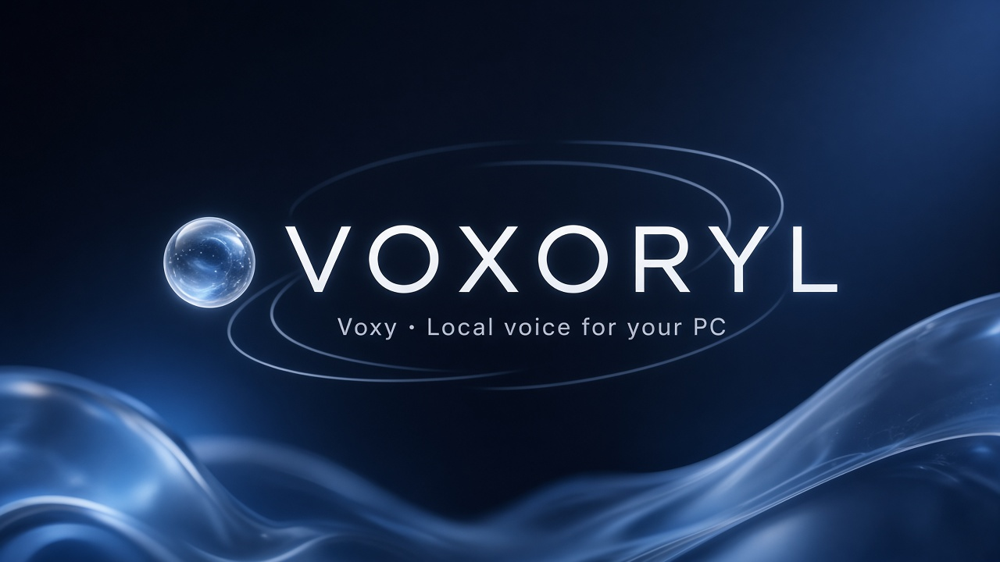

vox-OR-ill · short name Voxy
Local voice for your PC

A voice assistant that runs on your computer. You talk; it opens apps, drives Chrome & YouTube, and stays mostly offline. Say “Hey Voxy”.
Talk to a floating voice orb on your desktop. Windows and Mac — on-device by default via Ollama; optional cloud for chat only.
Python 3.11+, optional Ollama. Clone, make a venv, install, run:
git clone https://github.com/vishalgaur1/VOXORYL.git cd VOXORYL python -m venv .venv # Windows: .\.venv\Scripts\Activate.ps1 # macOS: source .venv/bin/activate pip install -e . python -m voxoryl
Full notes live in the README.
Prefer a zip? Grab the latest Win / Mac builds from Releases. Docker API image is on GHCR if you want the container path.